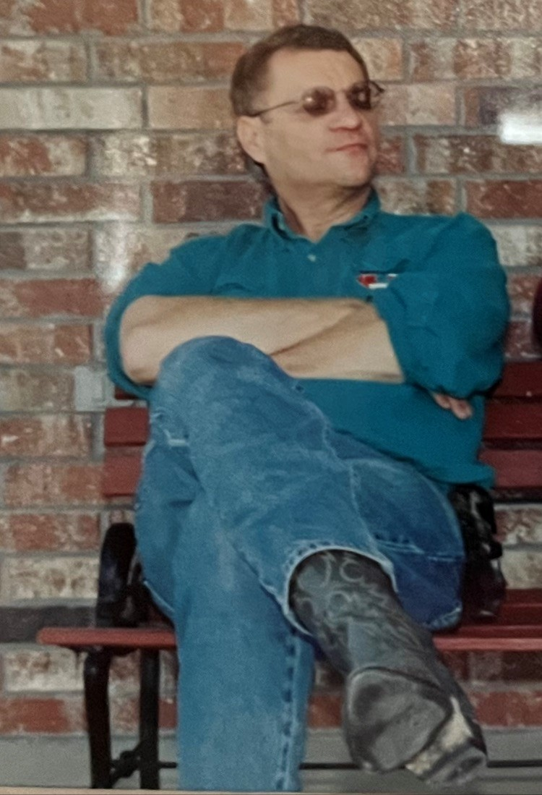
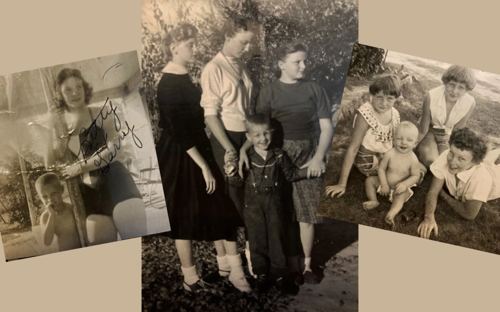

Legacy
 A recent photo of my Uncle Garry.
“Life is what happens to you while you’re busy making other plans.”
—John Lennon, Beautiful Boy.
Early in December I decided to write a Christmas blog. I envisioned a happy, funny piece for the holidays. In January in honor of my mother’s birthday, I planned to write a blog for her. Neither of those things happened. I had only just begun to flesh out the Christmas blog when my sister called me and asked if I was sitting down. She gave me a chance to respond and then said, “Uncle Garry has died.”
What?
My Uncle Garry was the youngest of my mother’s siblings and, as far as I knew, was in good health. How could he be dead? No one really knew. He had not felt well for a couple of days but didn’t want to go to the doctor. My cousin found him after he didn’t respond when she called to see how he was feeling. It was December 5th.
My grandparents had six children—three boys and three girls. My mother, the third child, was the oldest of the girls and was 10 when Garry was born. My mother had a small camera when she was growing up and loved taking pictures of Garry. Sometimes someone else was behind the lens, and then the picture of Garry usually had my mom close by. Although she moved to Little Rock after she married, she and Garry remained close. Even after my sister and I were born, she frequently drove the 50 miles back to Morrilton to see her parents and baby brother.
Garry lived in Morrilton, Arkansas, his entire life, while my family eventually moved to Mississippi. When I was younger, I’d see him over the holidays when we would make the long drive north.
 Young Garry with his sisters. Left—with my mother, Betty, in an undated photo. Middle—(L-R), with Linda, Betty, and Brenda in 1958. Right—(L-R) with Brenda, Linda, and Betty in 1955.
Garry was 10 years older than me, and by the time I was a teenager, my sister, cousins, and I tended to spend more time at his house than with our grandparents. He was older but not old. We’d watch TV or play games. We played epic rounds of the card game Rook that often went long into the night. Garry and my cousin Ray were both “caution to the wind” type players and took big risks, bidding high even when their hand was weak. They sometimes got frustrated with the rest of us and said we were too conservative. As a team, Garry and Ray won a lot despite their recklessness.
Garry was also an excellent chess player, and he and I played whenever we had the chance. In all the years we played, I only beat him once.
Over the years, my life got more complicated. College, career, marriage, children—all the usual stuff that take up our days and keep us busy. As a result, my visits with family in Arkansas have been far fewer over the last 20 years. Although my sons, Kendrick and Keaton, met Garry once or twice, I doubt they would be able to describe him.
My Uncle Garry was tall and thin and always wore cowboy boots. He drove a Ford F150, loved the USA, God, and football. Now that it is too late, I realize how unfortunate it is that my sons spent so little time with him. With the benefit of hindsight, I see the similarities between my uncle and my youngest son. Like Garry, Keaton is tall and thin, a ruthless Rook player, loves football, the USA, cowboy boots, and playing chess. Just like my uncle, Keaton makes his chess moves quickly and is often frustrated with me when I take too long to make a move. He always wins. In my mind’s eye, I can see Garry and Keaton playing a rapid game of chess, but I have no idea who would have won.
Keaton with Garry’s 2004 Ford F150.
Garry was what the Bible calls “the salt of the earth.” He got up, went to work, went to church, and always did what he thought was right. He wasn’t famous. His name will never appear in any history book, but he still leaves a legacy. His legacy is in the lives of those he touched, and, like so often happens, the mark he left on us is only fully appreciated now that he is gone.
Garry was briefly married when he was in his thirties and never had children of his own. Perhaps for that reason, when he wrote his will he was generous with his extended family. After his death, I found myself in possession of his beloved Ford F150. Without hesitation, I gave it to Keaton. Although he’s not Garry’s son, he’s still part of his legacy. I think Garry would be pleased with my decision because Keaton will love the truck the same way he did. I can easily imagine Uncle Garry looking down from heaven and smiling as he watches over Keaton behind the wheel of his F150.
Quick Links
| Pages | Other Pages | |
|---|---|---|
| Home | The Agent Orange Trilogy | |
| The RAM Blogs | Edge of Justice | |
| Books | Help | |
| Media | ||
| About Me | ||